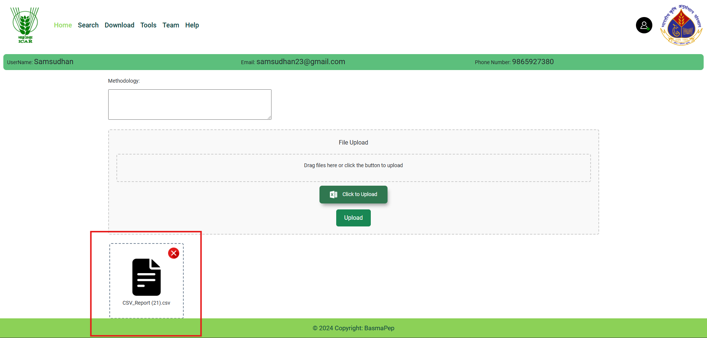

Search
- Users can search peptides using attributes such as Accession
Number, Score, Peptide Sequence, Peptide Modification, and Peptide Mass.
Download
-
Data can be filtered using combinations of categories, such as Score
and Mass or Peptide Length and Mass
-
Selected data can be downloaded as a CSV file by clicking the download
arrow, providing an easy way to save and analyze peptide information.
Data Submission
-
The submission page provides an easy-to-use interface for uploading
data in the CSV format.

BLAST Tool
-
Supports searches against both the BasmaPep database and NCBI databases